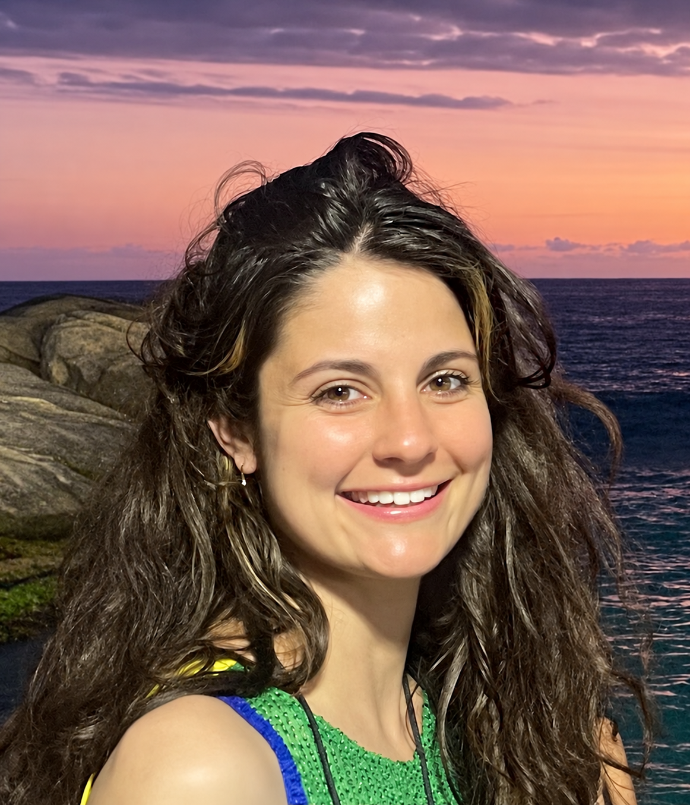

Ségolène Martin
Email Github Scholar CV
I am a tenured researcher (Chargée de Recherche) at Inria Lyon in the OCKHAM team.
My current research is at the intersection of optimization and generative learning, with applications to image processing and computer vision.
Previously, I was a postdoctoral researcher at TU Berlin, in the
team headed by Prof.
Gabriele Steidl. I completed my PhD in applied mathematics at CentraleSupélec, Université Paris-Saclay,
in the CVN / OPIS Inria team. I did my PhD under the supervision of Prof.
Jean-Christophe Pesquet (CVN, CentraleSupélec) and Prof.
Ismail Ben Ayed (ILLS, ETS Montréal).
Research interests
- Generative modeling
Flow-based methods (mainly) for imaging - Inverse problems for imaging
Image restoration and reconstruction in the Bayesian framework - Classification
Clustering and few-shot optimization-based methods, transductive learning,
text-vision models - Large-scale continuous optimization
Proximal algorithms, subspace acceleration, convergence theory
Education
- PhD in Applied Mathematics, 2020-2024
CentraleSupélec, Université Paris-Saclay - Master in Mathematics, Vision and Learning (MVA), 2019-2020
École Normale Supérieure Paris-Saclay - Agrégation in Mathematics, 2018-2019
École Normale Supérieure Paris-Saclay - Bachelor's Degree in Fundamental Mathematics, 2016-2017
École Normale Supérieure Paris-Saclay